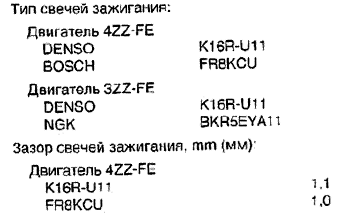

Говорят, что для Toyota Corolla E120 с двигателем 4ZZ-FE 1,4 подходят следующие свечи:
DENSO K16R-U11 (зазор 1,1 мм) - по данным издательства "За рулем"
BOSCH FR8KCU (зазор 1,0 мм) - по данным издательства "За рулем"
Выдержка из официальной документации:

Один перец писал, что для Тойоты с кузовом E120 он использовал свечи NGK BKR5EYA (они в официальной документации для двигателя 3ZZ-FE). Неясно, прав или нет он. Лучше пользоваться данными из техдокументации.